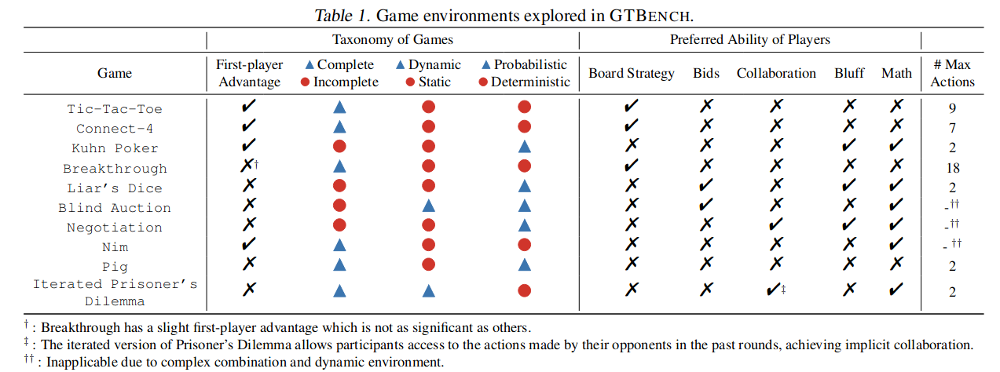
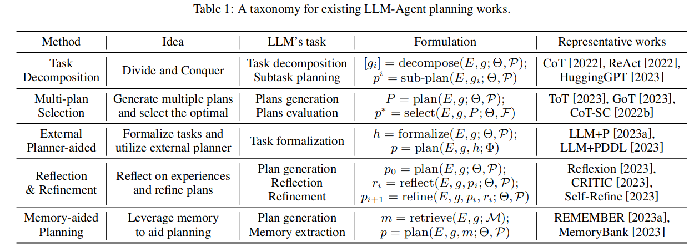
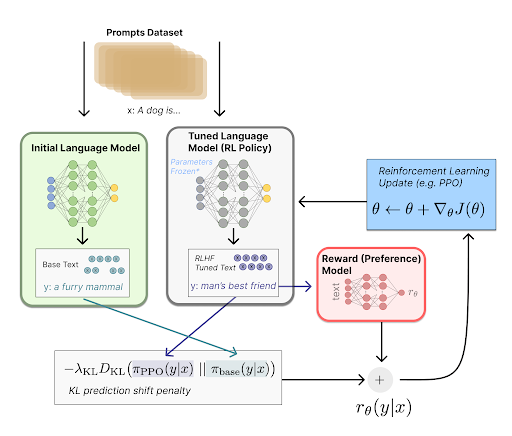
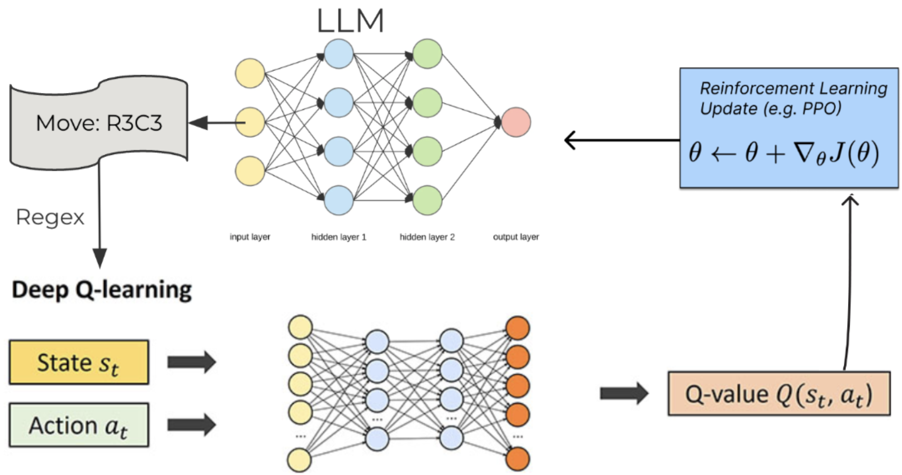
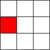
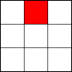
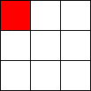

LLMs playing games
Can LLMs plan and reason?
This page is alive i.e, I’ll be adding new visualizations (new LLM, Game, Planning approach etc.).
Introduction
In-context learning and instruction following capabilities of LLMs combined with their large world knowledge made them great a solving system 1(Kahneman 2011) tasks. The next obvious question would be to evaluate their performance in tasks that require deliberate thinking and planning i.e. system 2(Kahneman 2011) tasks.
Evaluation
Recent works try to evaluate system 2 capabilites of LLMs through
- Planning to solve tasks in interactive text-world environments
- ALFWorld (Shridhar et al. 2020).
- Web-Shop (Yao et al. 2022).
- Fact Checking tasks
- FEVER (Thorne et al. 2018)
- Question Answering tasks
- HotPotQA (Yang et al. 2018)
The issue with these evaluations is that an LLM with prior knowledge of facts can easily solve the tasks without deliberate thinking and planning.
In their new work (Duan et al. 2024) Propose to evaluate deliberate thinking through game-theoretic tasks.
“the extensive background and intricate details involved in role-play-based games dilute the pureness of logic and strategic reasoning that is typically found in game theoretic tasks”
They Propose GTBench a collection of 11 games and suggest evaluating LLM capabilities through LLM vs LLM or LLM vs Classical Agent games.

We use GTBench to evaluate the Planning capabilities of LLMs.
Architectural choices involved in LLM Based Agent design

In-Context Methods
Our-Approach
Results
| NRA | Prompt-GPT4 Agent | CoT-GPT4 Agent | ToT-GPT4 Agent | IC-MCTS Agent |
|---|---|---|---|---|
| VS MCTS | -0.66 | -0.3 | -0.5 | -0.75 |
| VS Rand-Agent | 0.5 | 0.5454 | 0.25 |
In-Weight Methods
Our-Approach
RLHF finetuning for strategic reasoning
A traditional RLHF pipeline has the following steps
- Gather preference data
- Train a reward model
- Use feedback from the reward model to train the LLM using PPO

We adapt this pipeline for training LLM agents to play strategic games. Instead of gathering preference data and then training a reward model, we directly train a Deep Q Network model using self play. This Deep Q Network model will then be used to provide reward values for responses from the LLM.
The whole pipeline is as shown below:
- Train DQN using self-play to play games from the Open Spiel framework
- Evaluate the DQN against random agent and another DQN agent and store it in state buffer
- Generate rewards for state, action pairs in the replay buffer
- Generate prompts for each state, prompt LLM to get it’s response. Extract action using regex
- Use reward from the DQN as feedback, train the LLM using PPO
The above steps can be repeated for multiple games and a multi-game dataset of state/action pairs along with their rewards can be created. In particular we generate a five game dataset which includes data from the games Tic-Tac-Toe, Kuhn’s Poker, Nim, Liar’s dice, and Pig. The reason we restrict ourselves to these games is that they have an easy structure which makes it relatively simpler to engineer prompts and regexes for them.

Results
| Normalized Relative Advantage | RLHF LLAMA2 (only ticatac toe data) | RLHF LLAMA2 (Multi-Game Data) |
|---|---|---|
| VS LLAMA2 | 0.18 | 0.16 |
Visualizations
Here are some visualizations of LLMs playing against classical AI agents.
- 7B parameter LLMs are not great at the tasks as can be seen from the visualizations.
- I’ll soon upload the visualizations for larger LLMs.
Tic-Tac-Toe, Propmt-based Agents
- Game: Tic-Tac-Toe
- LLMs: LLAMA2 7B, MISTRAL 7B
- Agent Design: Propmt based, i.e, game instructions and current state are given in the input prompt to the LLM.
- Reasoning Module: None/LLM itself.
The Player using 🟥 Is the LLM Agent
The Player using 🟦 Is Monte Carlo Tree Search.



Tic-Tac-Toe, Chain-of-Though Prompt based Agents
llama2_7b
- Topmost paragraph is the system prompt.
- Second paragraph is the user prompt.
- LLM response is the last paragraph.